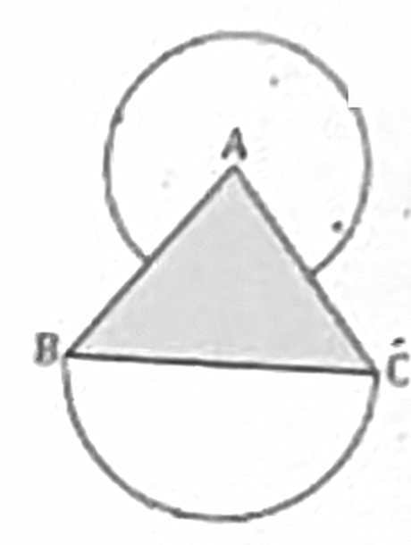
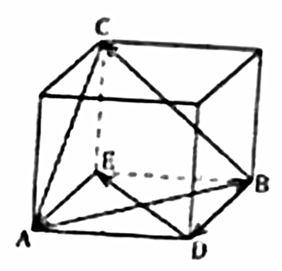
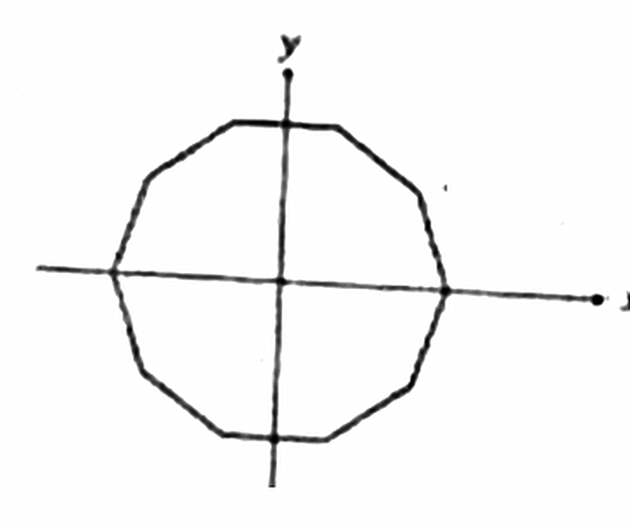

נתון: a + b = √15
a − b = √60
a = ?
הצגת הפתרון
התשובה הסופיתתשובה (4)3√152
דרך הפתרון והסבר
מחברים: 2a = √15 + √60 = √15 + 2√15 = 3√15 ⇒ a = 3√152.
מוקשים נפוצים
√60 = 2√15.
נבדקהפתרון תואם את מפתח התשובות של הספר.
נתון: a + b = √15
a − b = √60
a = ?
התשובה הסופיתתשובה (4)3√152
מחברים: 2a = √15 + √60 = √15 + 2√15 = 3√15 ⇒ a = 3√152.
√60 = 2√15.
נבדקהפתרון תואם את מפתח התשובות של הספר.
a גדול ב־b% ממספר כלשהו.
מהו אותו מספר?
התשובה הסופיתתשובה (3)100a100 + b
a = N(1 + b100) ⇒ N = 100a100 + b.
לא להוריד b% מ־a – האחוזים מחושבים מהמספר המקורי.
נבדקהפתרון תואם את מפתח התשובות של הספר.
3ᵃ · 9ᵇ = 27
4ab = 8
a² + 4b² = ?
התשובה הסופיתתשובה (1)1
3ᵃ · 3²ᵇ = 3³ ⇒ a + 2b = 3. ab = 2. (a + 2b)² = a² + 4ab + 4b² = 9 ⇒ a² + 4b² = 9 − 8 = 1.
נבדקהפתרון תואם את מפתח התשובות של הספר.

בסרטוט שלפניכם משולש שווה צלעות ABC שאורך צלעו a. כמו כן, בסרטוט שני מעגלים חופפים – האחד שמרכזו A והשני שמרכזו מונח על הצלע BC.
לאור נתונים אלו ונתוני הסרטוט, מה גודלו של השטח הלבן בסרטוט?
התשובה הסופיתתשובה (1)πa²3
שני המעגלים ברדיוס a/2 (המעגל התחתון נשען על BC כקוטר). מהמעגל שמרכזו A, גזרה של 60° בתוך המשולש ⇒ הלבן ממנו 300360 · πa²4 = 5πa²24. מהמעגל התחתון לבן החצי שמתחת ל־BC: πa²8 = 3πa²24. סה"כ 8πa²24 = πa²3.
נבדקהפתרון תואם את מפתח התשובות של הספר.
החלק הלבן זוהה לפי הסרטוט.

בסרטוט שלפניכם קובייה. ארנב וצב יוצאים באותו הזמן ובאותה המהירות לריצה מהנקודה A.
מסלול הארנב היה A → B → C → A
מסלול הצב היה A → B → D → E → A
כאשר הארנב הגיע חזרה ל־A, הצב ____
התשובה הסופיתתשובה (2)היה במהלכו של הקטע E → A
מקצוע 1. הארנב: AB, BC, CA הם אלכסוני פאות ⇒ 3√2 ≈ 4.24. הצב: AB = √2, BD = 1, DE = √2, EA = 1. אחרי √2 + 1 + √2 ≈ 3.83 הצב מתחיל את EA ומסיים ב־4.83 ⇒ ב־4.24 הוא באמצע הקטע E → A.
נבדקהפתרון תואם את מפתח התשובות של הספר.
אורכי הקטעים לפי הסרטוט.
נתון: הביטוי x!(x − 3)! מתחלק ב־30 ללא שארית.
איזה מהמספרים הבאים יכול להיות x?
התשובה הסופיתתשובה (2)17
x!(x − 3)! = x(x − 1)(x − 2). שלושה מספרים עוקבים תמיד מתחלקים ב־6, ונדרש גם גורם 5. 17 · 16 · 15 ✓. ב־13, 23, 29 אין כפולה של 5 בשלשה.
נבדקהפתרון תואם את מפתח התשובות של הספר.
נתון: x < −5 , x2 הוא מספר שלם.
איזה מהביטויים הבאים הוא הגדול ביותר?
התשובה הסופיתתשובה (1)(−111)x
x זוגי ושלילי ⇒ (−111)ˣ = 11|x| חיובי וגדול. המעריכים x + 1, x − 1 ו־2x + 1 אי־זוגיים ⇒ שאר הביטויים שליליים. הגדול ביותר (1).
נבדקהפתרון תואם את מפתח התשובות של הספר.

מצולע משוכלל בעל 10 צלעות משורטט במערכת צירים כך שראשית הצירים נמצאת במרכז המעגל החוסם את המצולע.
אילו מהנקודות הבאות שעל המצולע המשוכלל הכי רחוקות מראשית הצירים?
התשובה הסופיתתשובה (1)קודקודי המעשר
כל הקודקודים של מצולע חסום מונחים על המעגל, ושאר הנקודות על הצלעות נמצאות בתוכו ⇒ הקודקודים הכי רחוקים.
נבדקהפתרון תואם את מפתח התשובות של הספר.
ניא ביקש מאלי להשתתף במשחק מסוים בו עליו לבחור את ספרת האחדות של מספר ראשוני דו־ספרתי הקטן מ־50.
ניא: "אלי, שים לב שחשוב לי שספרת האחדות שתבחר היא בעלת הסיכוי הנמוך ביותר להופיע".
אלי: "אם כך אני חושב שעלי לבחור בספרה ___".
התשובה הסופיתתשובה (4)9
ראשוניים דו־ספרתיים קטנים מ־50: 11, 13, 17, 19, 23, 29, 31, 37, 41, 43, 47. ספרת אחדות 1: 3 פעמים, 3: 3, 7: 3, 9: רק 2 (19, 29) ⇒ 9.
נבדקהפתרון תואם את מפתח התשובות של הספר.
x, y, z ו־w מספרים שלמים. נתון: y(x − 7)(z + 8) = 6w − 5
איזה מהמספרים הבאים בהכרח זוגי?
התשובה הסופיתתשובה (1)x
6w − 5 אי־זוגי ⇒ גם המכפלה אי־זוגית ⇒ כל הגורמים אי־זוגיים: x − 7 אי־זוגי ⇒ x זוגי.
z + 8 אי־זוגי ⇒ z אי־זוגי; y אי־זוגי.
נבדקהפתרון תואם את מפתח התשובות של הספר.
אין במקבץ הזה שאלות שמתאימות לסינון.